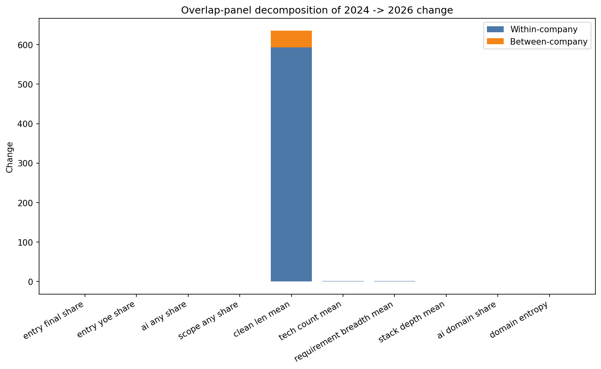
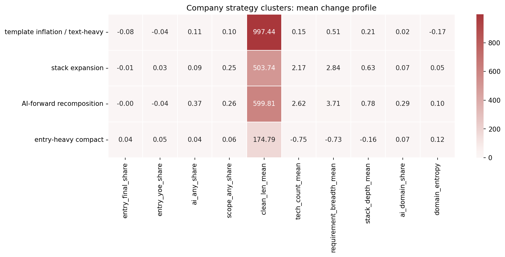
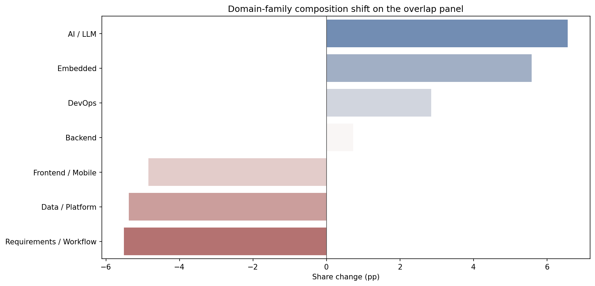

Returning employers changed their own postings; the decomposition is the headline.¶
Claim¶
The company-level evidence is strongest when you read it as within-firm densification rather than a single market-wide shift.
T16 is the clean decomposition result. Among 237 returning companies with at least three SWE postings in both periods, the overlap panel shows most of the AI, scope, and length movement happening within firms. The pooled-2024 baseline flips the explicit-entry sign, which is why the company and seniority instruments cannot be treated as interchangeable. The exact cluster typology remains provisional.
Evidence¶
- The verified overlap counts are 237 companies at
>=3and 122 at>=5. - AI, scope, and length changes are mostly within-company; the within-company components dominate the headline deltas.
- Explicit entry falls slightly on the arshkon-only panel, but flips positive under pooled 2024; the YOE proxy stays positive in both cases.
- The exact four-cluster typology was not reproduced cleanly in verification, so the decomposition should lead and the cluster labels should stay provisional.
Figures¶



Sensitivity and caveats¶
- The no-aggregator and cap-25 variants preserve the decomposition direction.
- The exact cluster split is spec-dependent and should not be over-literalized.
- Use the decomposition as the core result and the cluster names only as a provisional lens.
- The verified headline is within-company change; the cluster labels are a secondary heuristic.
Raw trail¶
What this means¶
- The story is company heterogeneity and within-firm change, not a single market average.
- The typology is useful as a heuristic, but the decomposition is the defensible headline.
- Lead with the verified overlap panel before mentioning any cluster labels.